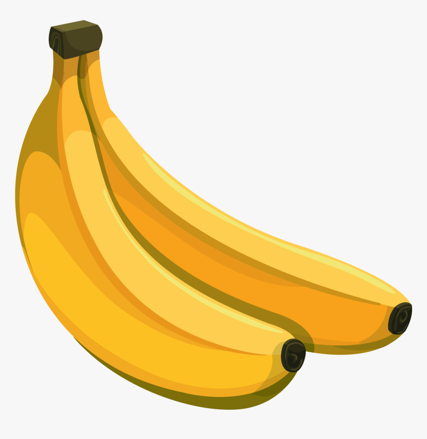

Banana
<<<<<<< HEAD

Bananas contain essential nutrients that keep you healthy, they provide benefits for digestion, weight loss and even heart health. A medium sized banana contains around 320-400mg of potassium, this meets around 10% of your daily potassium need. Bananas are also a rich source of vitamin C and magadnese which is good for your skin. Furthermore bananas are also a good source of energy.
======= Bananas contain essential nutrients that keep you healthy, they provide benefits for digestion, weight loss and even heart health. A medium sized banana contains around 320-400mg of potassium, this meets around 10% of your daily potassium need.
>>>>>>> b934c976c696785a972acadfa57d52517a4a76abMeal
Banana Pancakes

Fragrant spiced chicken with banana sambal

Banana Smoothie

Health
Health Benefits

- Bananas are an excellent source of potassium and supply vitamin B6, fibre and carbohydrate, and some vitamin C.
- Unripe bananas have a higher starch content. As they ripen, the starch is converted to sugar (and the fruit becomes sweeter).
- Green bananas are also a good source of pectin, which is a type of dietary fibre found in fruits and helps them keep their structural form. Pectin breaks down when a banana becomes overripe, which causes the fruit to become softer.
Nurtritional Benefits
- Bananas are loaded with valuable micronutrients, especially potassium. Potassium is one of the most important electrolytes in the body, helping to regulate heart function as well as fluid balance – a key factor in regulating blood pressure.
- Bananas are soothing to the gastrointestinal tract due to their high content of pectin – as soluble fibre that not only lowers cholesterol but normalises bowel function.
- The resistant starch in bananas also has a prebiotic effect, helping to fuel the gut bacteria so they increase their production of short chain fatty acids which are beneficial for digestive health.
Health Benefits
- The inside of a banana skin can be used to calm an itchy mosquito bite - many people find that rubbing the bite with the skin helps to reduce irritation.
Fun Fact
Beauty
Banana Face Mask
Click here to find your skin type!

- Banana works for all skin types and can be used in homemade face masks, natural body scrubs, and even home hair treatments. Leftover ripe bananas are often the best ones for DIY beauty.
- Honey - for dry skin, oily skin, and acne
- Clay - to absorb excess oil and purify pores
- Lemon Juice - to help lighten scars
- Mashed Avocado - to help replenish moisture
- Yogurt - for moisture and soothing effects
- Turmeric Powder - to reduce dark spots and acne while increasing brightness
You will need:
- Mix all ingredients in a bowl, adding water when needed to create a thick texture.
- Pull the hair back away from your face to prevent the banana from getting stuck in it.
- Apply to clean, dry skin in an even layer.
- Leave on for 10 to 15 minutes before rinsing off with lukewarm water.
- Pat the skin dry and follow up with moisturizer.
- Repeat two to three times per week.
Instructions: